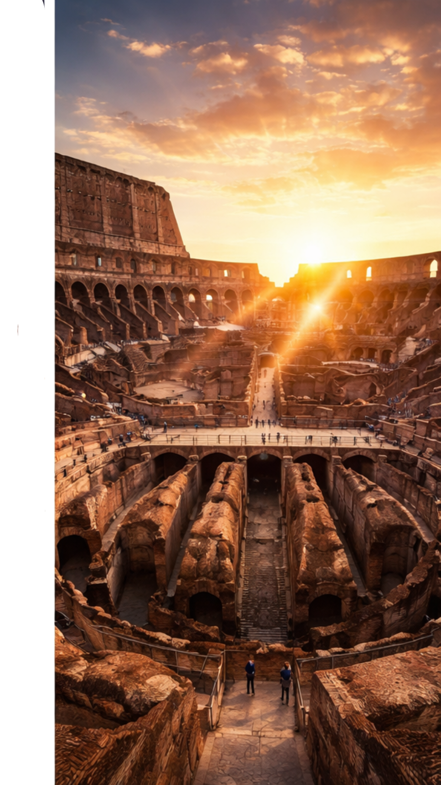
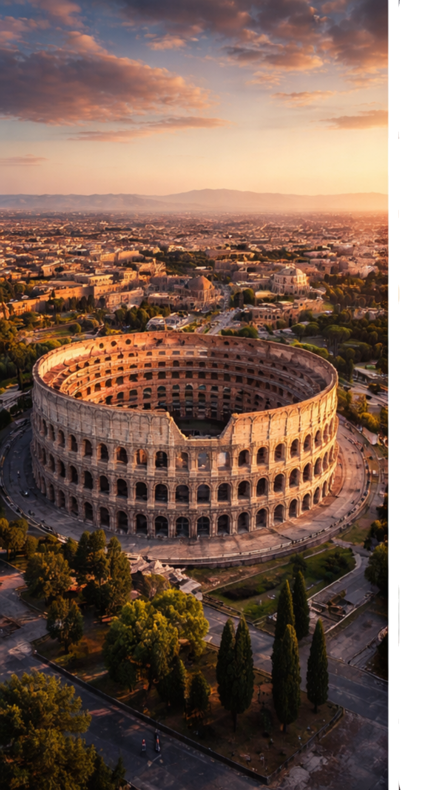
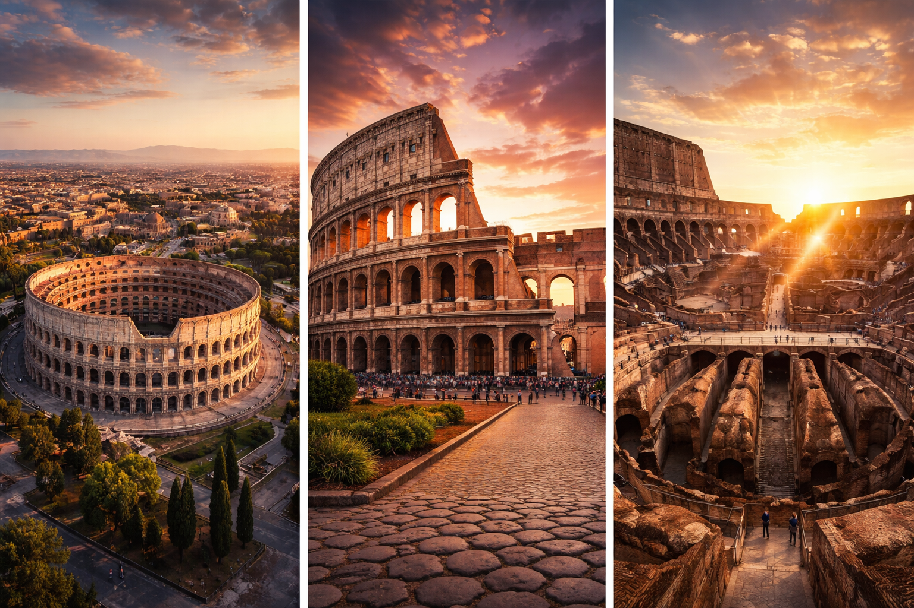

History
羅馬競技場是羅馬最具代表性的地標之一,建於公元80年， 用於角鬥士對戰及大型娛樂活動。

Attraction
1. 壯觀建築超過2000年歷史仍保存良好古羅馬工程技術的代表
2. 歷史沉浸感走進競技場彷彿回到古羅馬時代可參觀地下通道（角鬥士準備區）
3. 夜景迷人夜晚燈光下更顯壯麗，非常適合拍照

Food
Pizza, Pasta, Gelato
Transportation
Train & Metro Guide

Explore Rome, Food & Culture

羅馬競技場是羅馬最具代表性的地標之一,建於公元80年， 用於角鬥士對戰及大型娛樂活動。

1. 壯觀建築超過2000年歷史仍保存良好古羅馬工程技術的代表
2. 歷史沉浸感走進競技場彷彿回到古羅馬時代可參觀地下通道（角鬥士準備區）
3. 夜景迷人夜晚燈光下更顯壯麗，非常適合拍照
Pizza, Pasta, Gelato
Train & Metro Guide